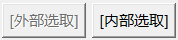
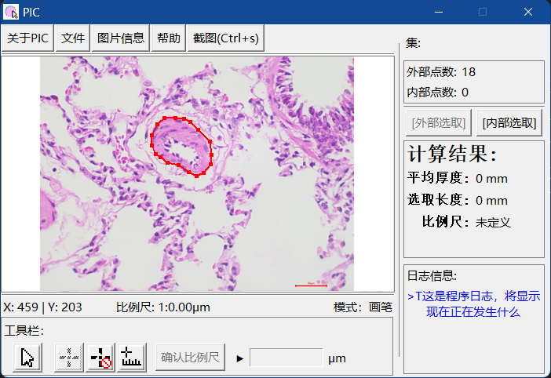
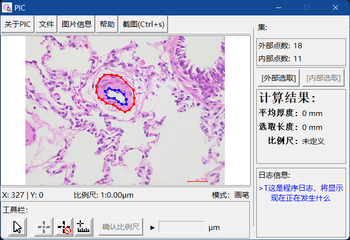
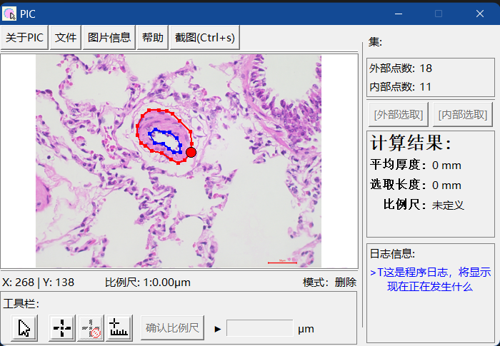
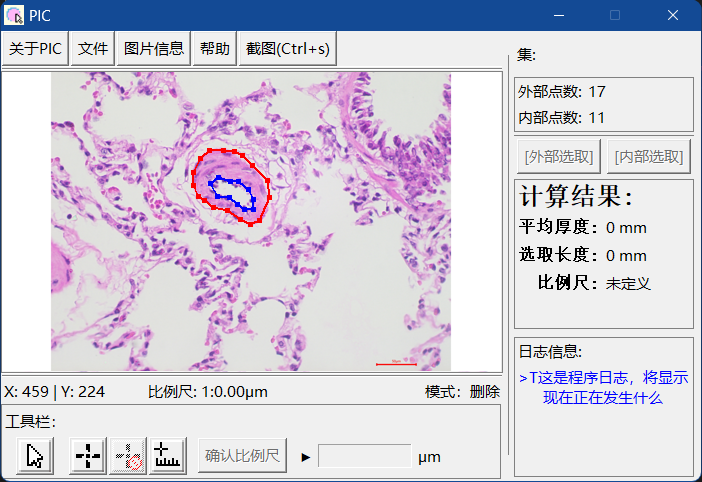

PIC 使用手册
<返回主页
增删数据点
程序计算的是在外部数据点与内部数据点之间的平均长度，所以需要定义一系列的数据点
在工具栏中，我们提供了数据点选取工具 来增加数据点(鼠标悬停显示说明)
在工具栏中，我们提供了数据点删除工具 来删除数据点(鼠标悬停显示说明)
注意到，当点击选择数据点选取工具后，“集”中的[外部选取]和[内部选取]中按钮将有一个激活 
此时，即为数据点选取状态，点击选取的图像绘制数据点。上述两个按钮“按下”状态即为被激活！
[外部选取]对应红色数据点和线条

[内部选取]对应蓝色数据点和线条，二者在同一幅图像上共存

当选择数据点删除工具后，将鼠标移动靠近已经存在的数据点，可以发现数据点吸附变大

此时点击即可删除，线条将自动更正

这步操作对内外点均有效